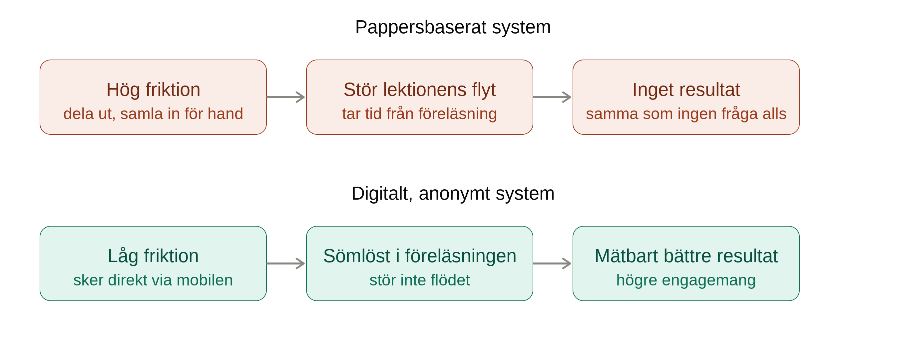

Vår idé är en anonym digital frågelåda som studenter kan använda under storföreläsningar. Via mobil eller dator kan de skicka in egna frågor anonymt och rösta på frågor från andra. Föreläsaren ser då vilka frågor flest studenter vill ha svar på och vilka missuppfattningar som är mest utbredda.
Beskrivning av lösningen
Anonymitet som kärnmekanism
Problemet är inte nödvändigtvis brist på frågor, utan rädslan för att ställa dem inför en stor grupp. Forskning om impostor syndrome beskriver hur känslor av otillräcklighet kan förstärkas av offentlig exponering och social jämförelse, vilket kan göra att studenter tystnar även när de har relevanta frågor (Álvarez Ayala et al., 2026). Anonymiteten minskar den sociala exponeringen utan att ta bort möjligheten att fråga.
Låg friktion
Verktyget behöver gå snabbt att använda mitt under föreläsningen. Mayer et al. (2009) fann att pappersbaserade frågesystem inte gav samma förbättring som ett digitalt system. Utdelning och insamling av papper kunde störa föreläsningens flöde och ta tid. När digitala clickers var integrerade i undervisningen förbättrades studenternas resultat (Mayer et al., 2009). Därför ska frågelådan kunna användas snabbt utan att föreläsaren behöver avbryta undervisningen för att administrera den.

Skillnaden från tidigare verktyg
Clickers användes för att besvara frågor som föreläsaren redan hade ställt. I vår idé formulerar studenterna själva frågorna och föreläsaren ser i realtid vilka oklarheter som är viktigast att ta upp. Lösningen kombinerar därmed aktiv bearbetning av innehållet (Mayer et al., 2009) med ett sätt att minska den sociala barriär som kan hindra studenter från att fråga (Álvarez Ayala et al., 2026).